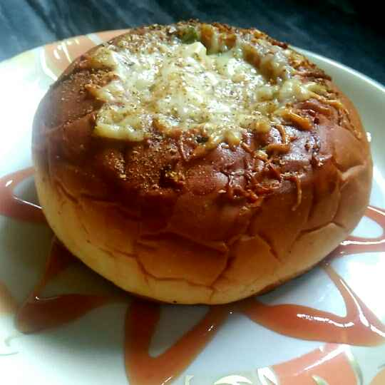

Are you hungry? Don't Wait! View Menu Order Now
What is Saatvik Food?
Sattvik food is basically pure vegetarian food without any use of Onion, Garlic or eggs. Onion and Garlic are Tamasik and for those who want to attain salvation (Moksha) prefer Sattvik Diet to excel on the path to Moksha.

Why No Onion No Garlic?
Onion and garlic belong to the genus allium whose sulfur-based defence systems give them their distinctive flavours. The sulphur chemicals cause irritation. They can kill microbes and repel insects. They damage the red blood cells of dogs and cats. They produce a sulfur molecule that is small and light enough to launch itself from the damaged tissue, fly through the air and attack our eyes and nasal passages.
"Well, we didn’t know why for 20 years later, until I owned the Alpha-Metrics Corporation. We were building biofeedback equipment and found out that garlic usually desynchronizes your brain waves"
--Dr. Robert [Bob] C. Beck, DSc.
Wish to know more? Check out this article by Ketul Chauhan
Explore our delicacies
Masala Dosa
Fermented dosa batter made of rice and black gram stuffed with boiled potatoes and peas with Indian seasoning, served with chutney, dal and mysore masala.
Ksh. 600.00
Fermented dosa batter made of rice and black gram stuffed with boiled potatoes and peas with Indian seasoning, served with chutney, dal and mysore masala.
Ksh. 600.00
Gulab Jamun
Soft Delicious Balls dipped in sugar syrup flavored with rose water. Made of milk powder, flour, saffron & cardamom powder, they are fried and then dipped.
Ksh. 250.00
Soft Delicious Balls dipped in sugar syrup flavored with rose water. Made of milk powder, flour, saffron & cardamom powder, they are fried and then dipped.
Ksh. 250.00

Pizza Bun
Baked pizza sauce, toppings, cheese & Italian seasoning in a burger bun.
Ksh. 350.00
Baked pizza sauce, toppings, cheese & Italian seasoning in a burger bun.
Ksh. 350.00

Puff Pastry
Baked layers of dough sheets stuffed with boiled potatoes, veggies and Indian seasoning.
Ksh.100.00
Baked layers of dough sheets stuffed with boiled potatoes, veggies and Indian seasoning.
Ksh.100.00
Our Services
- Catering
We cater for any event for atleast 10 people and atmost 1000 people. Contact us to get a quote. - Tiffin Services
We provide tiffin services for either lunch, dinner or both. The tiffin menu consists of Dal, Bhat, Shak, Rotli, Farsan, Mishtan, Papad & Salad. For customers who have booked everyday tiffin services, we have different menus for the weekend:
Saturday lunch: Puff Pastry, Pizza Bun or Sandwich
Saturday dinner: Naan & Any Punjabi Shak with Chaas and Papad.
Sunday lunch: Swaminarayan Khichdi with Chaas & Papdi
Sunday dinner: Any menu preferred - Birthday Events
We host birthday parties in our premises as well as cater for the menu and decorations.